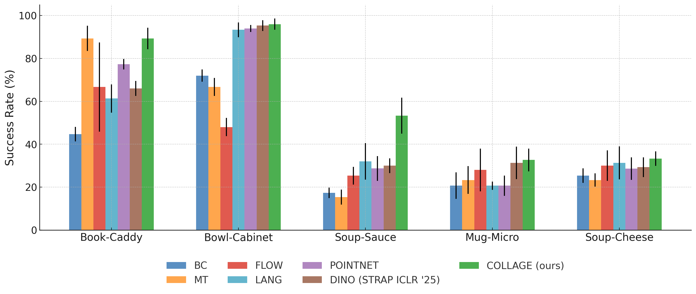
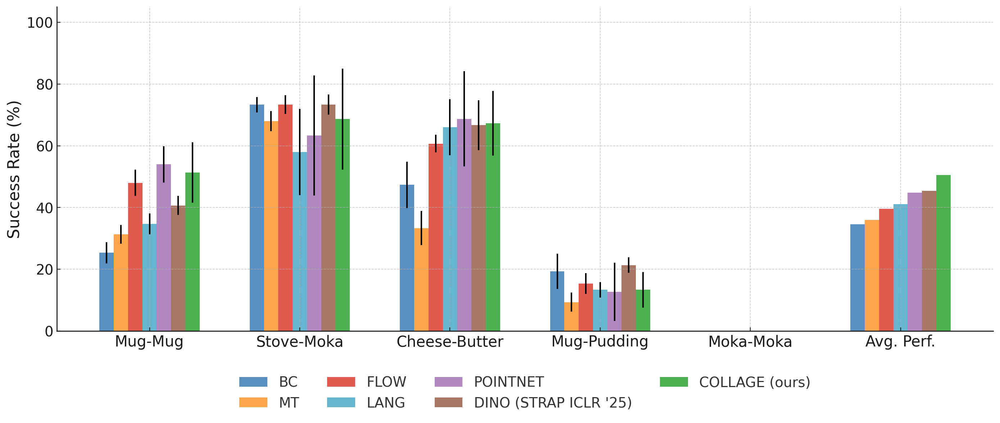
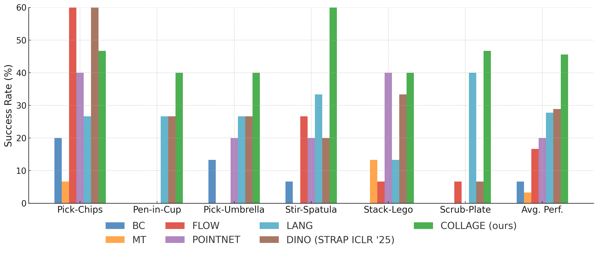
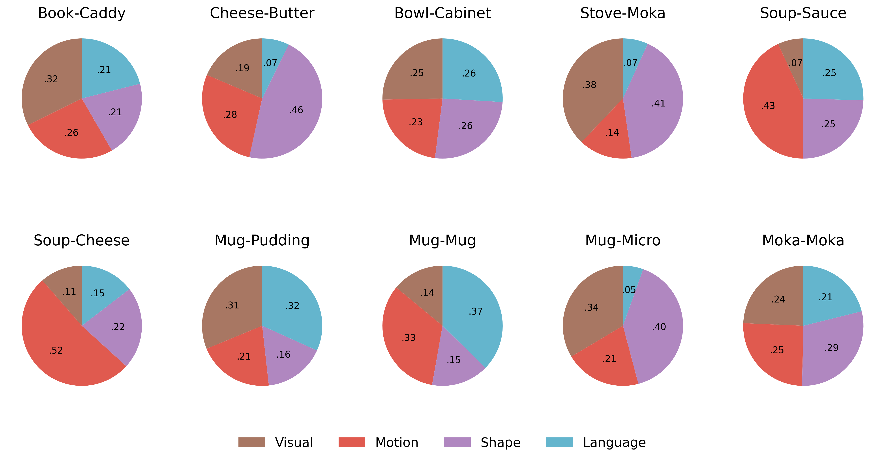

Simulated Experiments


Real-World Experiments

TL;DR: Few-shot imitation learning by retrieving sub-trajectories using diverse similarity metrics and adaptively weighting the retrieved data based on how well it aligns with target demonstrations under a learned policy.
In this work, we study the problem of data retrieval for few-shot imitation learning: selecting data from a large dataset to train a performant policy for a specific task, given only a few target demonstrations. Prior methods retrieve data using a single-feature distance heuristic, assuming that the best demonstrations are those that most closely resemble the target examples in visual, semantic, or motion space. However, this approach captures only a subset of the relevant information and is prone to introducing detrimental demonstrations, such as those from unrelated tasks with similar scene layouts or tasks with similar motion but divergent goals.
We present COLLAGE, a method for COLLective data AGgrEgation in few-shot imitation learning that uses an adaptive late fusion mechanism to guide the selection of relevant demonstrations based on a task-specific combination of multiple cues. COLLAGE assigns weights to subsets of the dataset pre-selected using single-feature retrieval (e.g., appearance, shape, or language similarity), based on how well a policy trained on each subset predicts the few target demonstrations. These weights are then used during training to importance-sample data across the retrieved subsets. This strategy is general, feature-agnostic, and flexible, enabling COLLAGE to leverage complementary information and outperform both single-modality and multitask baselines. In extensive experiments, COLLAGE improves average performance by 5.1% in simulation (LIBERO-10) and 16.6% in real-world tasks from the DROID dataset.




Below shows the demonstration segments (◼) from LIBERO-10 and retrieved sub-trajectories from LIBERO-90 using the visual (◼), motion (◼), and shape (◼) modalities, respectively. The visual modality retrieves segments that best match appearance using DINO features; the motion modality finds those sharing similar motion patterns using Optical Flow features; and the shape modality selects ones with comparable geometry using PointNet features.
Click the ← and → arrows to navigate through all tasks.
Task Instruction: "Pick up the Book and Place it in the Back Compartment of the Caddy"
Task Instruction: "Put the Black Bowl in the Bottom Drawer of the Cabinet and Close it"
Task Instruction: "Put Both the Alphabet Soup and the Tomato Sauce in the Basket"
Task Instruction: "Put the Yellow and White Mug in the Microwave and Close it"
Task Instruction: "Put the White Mug on the Left Plate and Put the Yellow and White Mug on the Right Plate"
Task Instruction: "Put the White Mug on the Plate and Put the Chocolate Pudding to the Right of the Plate"
Task Instruction: "Put Both the Alphabet Soup and the Cream Cheese Box in the Basket"